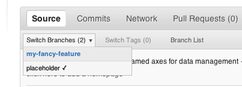

General Workflow to add a new feature¶
In TARDIS we aim to stick to a test driven development. This uses the testing framework extensively starting with a test that shows this feature lacking via the implementation of the feature until the merging of the code to the main repository.
In most cases we try to break down big features into small, quantifiable goals which are then acted upon.
- Document feature to be added in an issue and maybe ask the mailing list if this feature exists
- Write a test that demonstrates what feature will be added.
- Run the test to verify that it fails in the way you think it should.
- If it fails in an unexpected way, your test may be wrong. This is a great time to ask the group for guidance
- If it passes, you are done! You just added test coverage to an already existing feature, and that is great! (unlikely)
- Add the feature (also known as “a simple matter of programming”).
- Run the test to verify that it passes.
- Write documentation about your feature.
- close issue/partial PR and add to changelog.
Preparation and Working with Git¶
In this document, we refer to the Tardis master branch as the trunk. The first step is to setup up a python environment. We recommend to use
Anaconda for this purpose and refer to our Installation guide which covers this topic.
Creating a fork¶
You need to do this only once for each package you want to contribute to. The instructions here are very similar to the instructions at http://help.github.com/fork-a-repo/ — please see that page for more details. We’re repeating some of it here just to give the specifics for the TARDIS project, and to suggest some default names.
Set up and configure a GitHub account¶
If you don’t have a GitHub account, go to the GitHub page and make one.
You then need to configure your account to allow write access — see the Generating SSH keys help on GitHub Help.
Create your own fork of a repository¶
The following example shows how to fork the core astropy repository, but
the same applies to other packages:
Log into your GitHub account.
Go to the TARDIS GitHub home page.
Click on the fork button:

After a short pause and an animation of Octocat scanning a book on a flatbed scanner, you should find yourself at the home page for your own forked copy of TARDIS.
Setting up the fork to work on¶
Overview¶
This is done using:
git clone git@github.com:your-user-name/tardis.git
cd tardis
git remote add upstream git://github.com/tardis-sn/tardis.git
In detail¶
Clone your fork to the local computer:
git clone git@github.com:your-user-name/tardis.git
Change directory to your new repo:
cd tardis
Then type:
git branch -a
to show you all branches. You’ll get something like:
* master remotes/origin/master
This tells you that you are currently on the
masterbranch, and that you also have aremoteconnection toorigin/master. What remote repository isremote/origin? Trygit remote -vto see the URLs for the remote connections. They will point to your GitHub fork.Now connect to the TARDIS repository, so you can merge in changes from the trunk:
cd git remote add upstream git://github.com/tardis-sn/tardis.git
upstreamis just the arbitrary name we’re using to refer to the main TARDIS repository.Note that we’ve used
git://for the URL rather thangit@. Thegit://URL is read only. This means that we can’t accidentally (or deliberately) write to the upstream repo, and we are only going to use it to merge into our own code.Just for your own satisfaction, show yourself that you now have a new remote connection with
git remote -v show, which should give you something like:upstream git://github.com/tardis-sn/tardis.git (fetch) upstream git://github.com/tardis-sn/tardis.git (push) origin git@github.com:your-user-name/tardis.git (fetch) origin git@github.com:your-user-name/tardis.git (push)
Your fork is now set up correctly, and you are ready to hack away.
Installing TARDIS in develop mode¶
TARDIS is designed so that it can generally be used directly out of the source tree by using ``import `` when running Python in the source of an TARDIS repository clone.
Install TARDIS in develop mode:
$ python setup.py develop
This semi-permanently installs TARDIS on your path in such a way that
tardisis always imported from your repository clone regardless of your working directory. This way any edits you make to the code in your repository will always be immediately available next time you start a Python interpreter andimport tardis.
Workflow summary¶
This section gives a summary of the workflow to follow once you have successfully forked the repository. The details for each of these steps are given in the following sections.
- Don’t use your
masterbranch for anything. Consider deleting it. - When you are starting a new set of changes, fetch any changes from the trunk, then start a new feature branch from that (do not base your branch on your changes).
- Make a new branch for each separable set of changes — “one task, one branch” (ipython git workflow).
- Name your branch for the purpose of the changes, for example
bugfix-for-issue-14orrefactor-database-code. - If you can possibly avoid it, don’t merge the trunk or any other branches into your feature branch while you are working.
- If you do find yourself merging from the trunk, consider Rebasing on trunk
- Ask on the tardis-sn-dev mailing list if you get stuck.
- Once your code is nearing completion, run the test suite to ensure you have not accidentally caused regressions, and add new tests to ensure your contribution behaves correctly (see Testing Guidelines).
- Issue a pull request on github!
- As the code is converging to a final state, ensure your documentation follows the guidelines (see Writing Documentation).
- Once your code is ready to be accepted, please add an entry to the changelog (see Updating and Maintaining the Changelog). If you’re sure where to put this, please at least suggest a brief (one or two sentence) description of your change so that another developer can add it to the changelog.
This way of working helps to keep work well organized, with readable history. This in turn makes it easier for project maintainers (that might be you) to see what you’ve done, and why you did it.
See linux git workflow and ipython git workflow for some explanation.
Deleting your master branch¶
It may sound strange, but deleting your own master branch can help reduce
confusion about which branch you are on.
Updating the mirror of trunk¶
From time to time you should fetch the upstream (trunk) changes from GitHub:
git fetch upstream
This will pull down any commits you don’t have, and set the remote branches to
point to the right commit. For example, ‘trunk’ is the branch referred to by
(remote/branchname) upstream/master, and if there have been commits since
you last checked, upstream/master will change after you do the fetch.
Making a new feature branch¶
When you are ready to make some changes to the code, you should start a new branch. Branches that are for a collection of related edits are often called ‘feature branches’.
Making a new branch for each set of related changes will make it easier for someone reviewing your branch to see what you are doing.
Choose an informative name for the branch to remind yourself and the rest of
us what the changes in the branch are for. For example add-ability-to-fly,
or buxfix-for-issue-42.
# Update the mirror of trunk
git fetch upstream
# Make new feature branch starting at current trunk
git checkout upstream/master # checking out the newest master versio
git checkout -b my-new-feature
Generally, you will want to keep your feature branches on your public GitHub
fork. To do this, you git push this new branch up to your
github repo. Generally (if you followed the instructions in these pages, and
by default), git will have a link to your GitHub repo, called origin. You
push up to your own repo on GitHub with:
git push origin my-new-feature
In git >= 1.7 you can ensure that the link is correctly set by using the
--set-upstream option:
git push --set-upstream origin my-new-feature
From now on git will know that my-new-feature is related to the
my-new-feature branch in the GitHub repo.
The editing workflow¶
In more detail¶
Make some changes
Once you are a bit further along, test your changes do not lead to regressions, and add new tests (see the Astropy Testing Guidelines we follow).:
python setup.py test
If you have sphinx installed, you can also check that the documentation builds and looks correct:
python setup.py build_sphinx
The last line should just state
build succeeded, and should not mention any warnings. (For more details, see the Astropy Writing Documentation we follow.)See which files have changed with
git status(see git status). You’ll see a listing like this one:# On branch ny-new-feature # Changed but not updated: # (use "git add <file>..." to update what will be committed) # (use "git checkout -- <file>..." to discard changes in working directory) # # modified: README # # Untracked files: # (use "git add <file>..." to include in what will be committed) # # INSTALL no changes added to commit (use "git add" and/or "git commit -a")
Check what the actual changes are with
git diff(see git diff).Add any new files to version control with
git add new_file_name(see git add).Add any modified files that you want to commit using
git add modified_file_name(see git add).Once you are ready to commit, check with
git statuswhich files are about to be committed:# Changes to be committed: # (use "git reset HEAD <file>..." to unstage) # # modified: README
Then use
git commit -m 'A commit message'. Themflag just signals that you’re going to type a message on the command line. The git commit manual page might also be useful.Push the changes up to your forked repo on GitHub with
git push(see git push).
Asking for your changes to be reviewed and/or merged¶
When you are ready to ask for someone to review your code and consider a merge:
Go to the URL of your forked repo, e.g.,
http://github.com/your-user-name/tardis.Use the ‘Switch Branches’ dropdown menu near the top left of the page to select the branch with your changes:
Click on the ‘Pull request’ button:

Enter a title for the set of changes, and some explanation of what you’ve done. If there is anything you’d like particular attention for, like a complicated change or some code you are not happy with, add the details here.
If you don’t think your request is ready to be merged, just say so in your pull request message. This is still a good way to start a preliminary code review.
Making sure your Pull request stays up-to-date¶
More often then not it will take a few days until a Pull Request is merged as the community gives feedback and/or you add new fixes. During this time often other pull requests are merged and the master branch evolves further. To make sure that your changes are still working on the new master you want to rebase your branch ontop of the evolved master
Rebasing on trunk¶
Let’s say you thought of some work you’d like to do. You
Updating the mirror of trunk and Making a new feature branch called
cool-feature. At this stage trunk is at some commit, let’s call it E. Now
you make some new commits on your cool-feature branch, let’s call them A,
B, C. Maybe your changes take a while, or you come back to them after a while.
In the meantime, trunk has progressed from commit E to commit (say) G:
A---B---C cool-feature
/
D---E---F---G trunk
At this stage you consider merging trunk into your feature branch, and you remember that this here page sternly advises you not to do that, because the history will get messy. Most of the time you can just ask for a review, and not worry that trunk has got a little ahead. But sometimes, the changes in trunk might affect your changes, and you need to harmonize them. In this situation you may prefer to do a rebase.
Rebase takes your changes (A, B, C) and replays them as if they had been made
to the current state of trunk. In other words, in this case, it takes the
changes represented by A, B, C and replays them on top of G. After the rebase,
your history will look like this:
A'--B'--C' cool-feature
/
D---E---F---G trunk
See rebase without tears for more detail.
To do a rebase on trunk:
# Update the mirror of trunk
git fetch upstream
# Go to the feature branch
git checkout cool-feature
# Make a backup in case you mess up
git branch tmp cool-feature
# Rebase cool-feature onto trunk
git rebase --onto upstream/master upstream/master cool-feature
In this situation, where you are already on branch cool-feature, the last
command can be written more succinctly as:
git rebase upstream/master
When all looks good you can delete your backup branch:
git branch -D tmp
If it doesn’t look good you may need to have a look at Recovering from mess-ups.
If you have made changes to files that have also changed in trunk, this may generate merge conflicts that you need to resolve - see the git rebase man page for some instructions at the end of the “Description” section. There is some related help on merging in the git user manual - see resolving a merge.
If your feature branch is already on GitHub and you rebase, you will have to
force push the branch; a normal push would give an error. If the branch you
rebased is called cool-feature and your GitHub fork is available as the
remote called origin, you use this command to force-push:
git push -f origin cool-feature
Note that this will overwrite the branch on GitHub, i.e. this is one of the few
ways you can actually lose commits with git. Also note that it is never allowed
to force push to the main astropy repo (typically called upstream), because
this would re-write commit history and thus cause problems for all others.
Recovering from mess-ups¶
Sometimes, you mess up merges or rebases. Luckily, in git it is relatively straightforward to recover from such mistakes.
If you mess up during a rebase:
git rebase --abort
If you notice you messed up after the rebase:
# Reset branch back to the saved point
git reset --hard tmp
If you forgot to make a backup branch:
# Look at the reflog of the branch
git reflog show cool-feature
8630830 cool-feature@{0}: commit: BUG: io: close file handles immediately
278dd2a cool-feature@{1}: rebase finished: refs/heads/my-feature-branch onto 11ee694744f2552d
26aa21a cool-feature@{2}: commit: BUG: lib: make seek_gzip_factory not leak gzip obj
...
# Reset the branch to where it was before the botched rebase
git reset --hard cool-feature@{2}
Reviewing and helping others with Pull Requests¶
Github offers an extensive array of tools to comment on Pull Requests (line based, normal forum-like discussion, etc.). This system is described here in detail http://help.github.com/articles/using-pull-requests.
However sometimes, it is easier to just add a few changes yourself to quickly show what you would suggest to be changed. So it is possible to make a Pull Request on a Pull Request.
There are several ways to do this, but the easiest is to first make sure that your local git-repository understands the concept of pull-requests. So just add in your <my-project>/.git/config the following line to your remote upstream:
[remote "upstream"]
url = git@github.com:tardis-sn/tardis.git
fetch = +refs/heads/*:refs/remotes/upstream/*
fetch = +refs/pull/*/head:refs/remotes/upstream/pr/*
Then fetch from upstream again:
git fetch upstream
remote: Counting objects: 77, done.
remote: Compressing objects: 100% (72/72), done.
remote: Total 77 (delta 44), reused 9 (delta 5)
Unpacking objects: 100% (77/77), done.
From github.com:tardis-sn/tardis
b8306de..2f47ee5 master -> upstream/master
* [new ref] refs/pull/116/head -> upstream/pr/116
* [new ref] refs/pull/117/head -> upstream/pr/117
* [new ref] refs/pull/118/head -> upstream/pr/118
and now it is possible to check out a the pull request branch, in this case PR 116:
git checkout upstream/pr/116
git checkout upstream/pr/116
Note: checking out 'upstream/pr/116'.
You are in 'detached HEAD' state. You can look around, make experimental
changes and commit them, and you can discard any commits you make in this
state without impacting any branches by performing another checkout.
If you want to create a new branch to retain commits you create, you may
do so (now or later) by using -b with the checkout command again. Example:
git checkout -b new_branch_name
HEAD is now at b1f32ba... added the git workflow still WIP
Finally, you can make a new branch git checkout -b helping-with-PR116 and work implement your work.
After committing your changes you push your change to your repository git push origin helping-with-PR116.